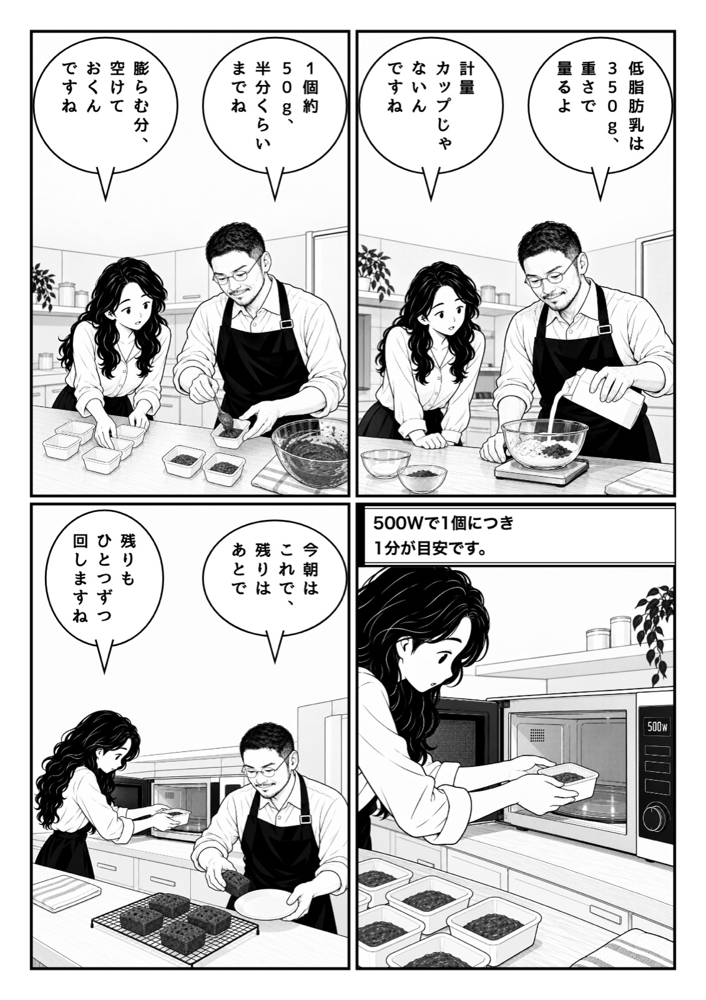
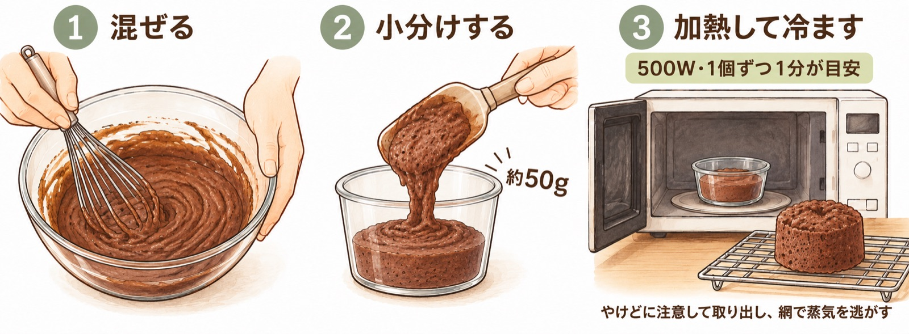
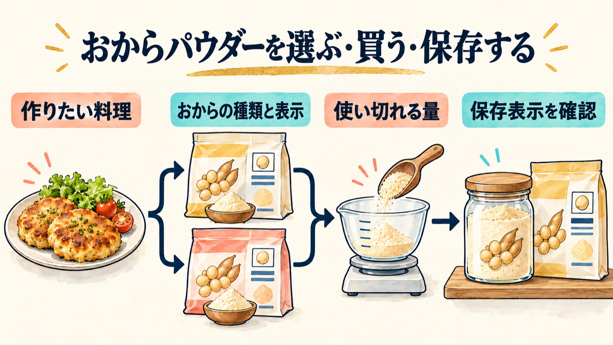
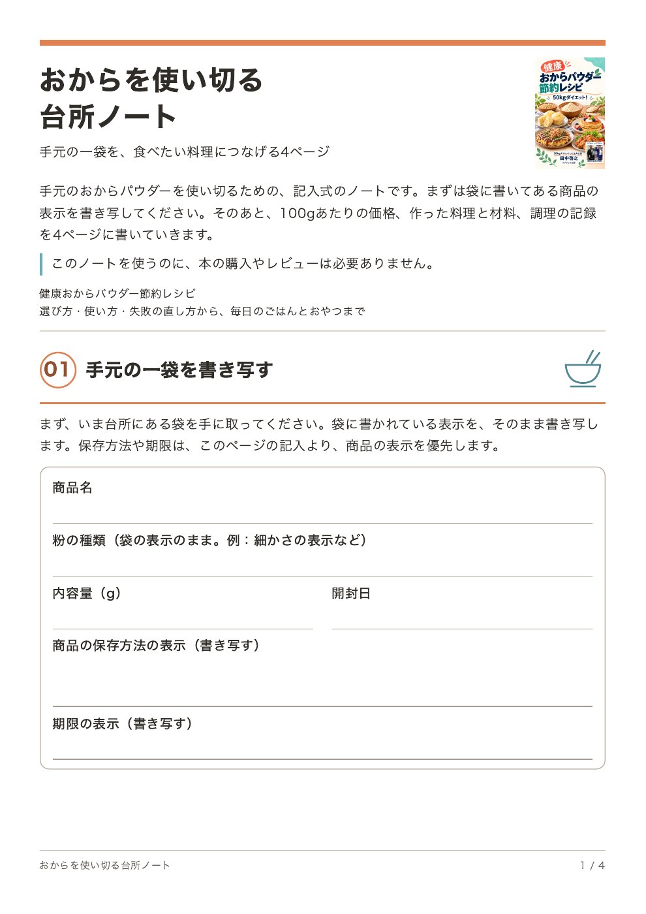
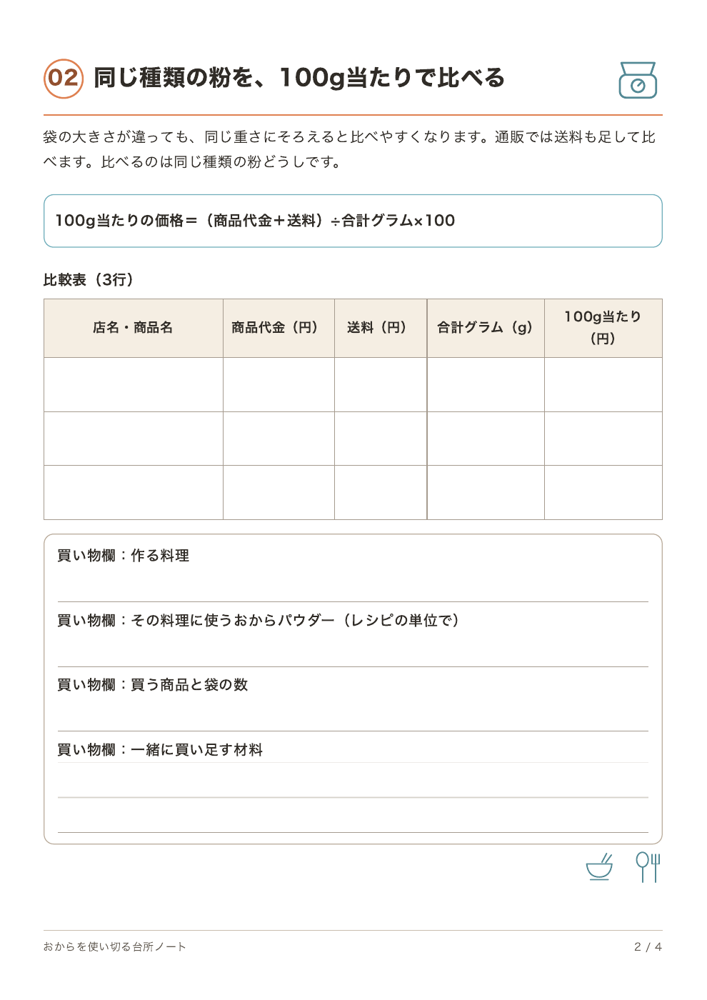
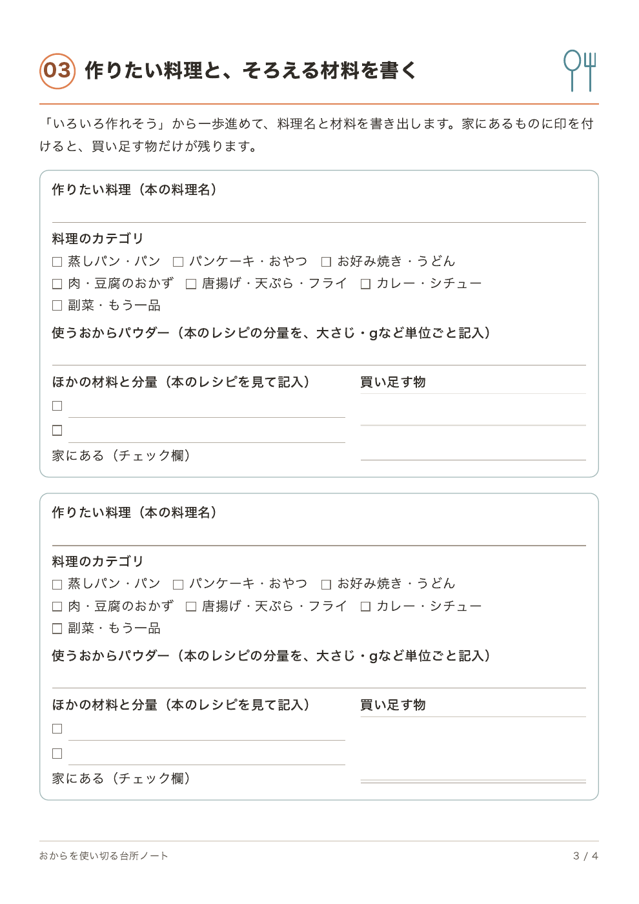
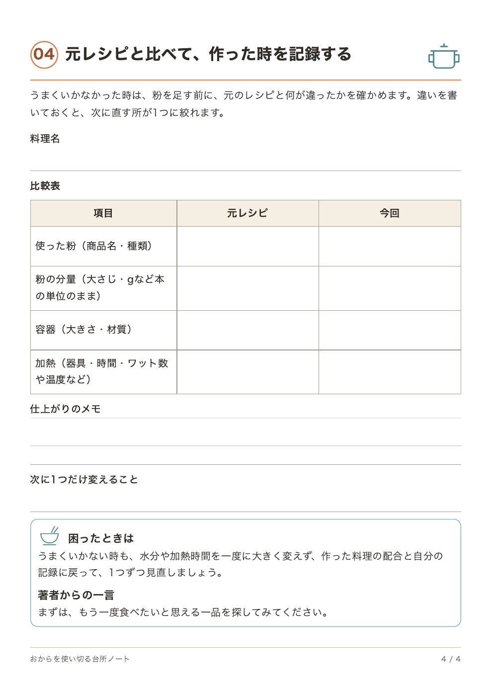

01 / 04
健康おからパウダー
節約レシピ
まず、おから一袋
手元のおから一袋から、ページが始まります。
メールとLINEで特典を受け取るメールアドレスを入力して、公式LINEの追加と連携を許可してください。メール登録が確認できたら、LINEトークに台所ノートのPDFリンクが届きます。購入もレビューも要りません。11日間で全11通のメール講座が始まるのは、新しくメール登録した方だけです。


健康おからパウダー
節約レシピ
手元のおから一袋から、ページが始まります。
メールとLINEで特典を受け取るメールアドレスを入力して、公式LINEの追加と連携を許可してください。メール登録が確認できたら、LINEトークに台所ノートのPDFリンクが届きます。購入もレビューも要りません。11日間で全11通のメール講座が始まるのは、新しくメール登録した方だけです。





50の料理
50話の料理漫画
7つのカテゴリ
本の紹介
買ったままの
選び方・使い方・失敗の直し方から、毎日のごはんとおやつまで
料理と作り方に加えて、50話の料理漫画を収録しました。
おからパウダーを使い始めた頃、私は10kgの業務用を買いました。期限内に食べ切れず、おすそ分けしたのが最初の失敗です。
安い袋を選ぶより、作りたい料理に合う粉を、使い切れる量で買う。この改訂版は、その考え方を出発点にしています。2021年に出した『健康おからパウダー節約レシピ』をもとに、著者ブログで紹介してきた料理も加えて組み直しました。
各料理からは、材料・手順・元記事の案内へ移動できます。台所でスマホやタブレットを開いたまま、材料を確かめ、手順に戻り、元になった記事をたどれます。
料理名だけでなく、卵・豆腐・鶏肉などの主な材料や、電子レンジ・フライパン・揚げ鍋などの調理器具からも探せます。
料理の前と後ろに、使い切るための話を置きました
料理の前には、おからパウダーを選ぶ・買う・保存する考え方と、パサつき・べたつき・膨らまない時の見直し方があります。うまくいかなかった時に、粉を足す前に何を確かめるかを順に書きました。
料理の後ろでは、買い物と食費の組み立て方、一食・弁当・作り置きへのつなげ方を扱います。栄養表示や保存の疑問は、手元の袋の表示を見ながら確かめる形にしています。
目次
7つのカテゴリか料理名で、50の料理から絞り込めます。
50件中 50件
試し読み →見つかりませんでした。別の言葉か、カテゴリから探してみてください。
作りたいものから探せるように、料理をカテゴリごとにまとめています。
おからココア蒸しパン、食パン風おから蒸しパン、熟したバナナのおからオオバコ蒸しパンなど。朝ごはんに食べたい一品から使い道を広げます。
ミニパンケーキ、おからのきなこ団子、おから団子入りおしるこ、レンジおからクッキーなど。甘いものも適度に楽しめます。
卵とおからパウダーの基本のお好み焼き、長芋のお好み焼き、無塩手打ちうどん、ほうとう煮込みまで。なじみのある粉ものに使います。
おから豆腐チキンナゲット、やわらかい豆腐鶏つくね、レンジで作るキャベツ焼売など。夕食の中心になるおかずです。
手羽元唐揚げ、油淋鶏、ちくわ天、牡蠣フライなど。生地に混ぜるだけでなく、衣として使う方法を集めました。
インド風チキンカレー、かぼちゃシチュー、手羽大根を使う和風カレーなど。リメイクや調理済み材料のアレンジも含みます。
鶏そぼろ入りスプーンコロッケと、おからパウダー入りポテトサラダ。食卓に添える小さなおかずです。
試し読み
画像をタップすると拡大できます。
こんな悩みはありませんか
買ったおからパウダーが、台所で眠っていませんか。
「何を作ればいいかわからない」
「パンケーキがパサつく」
「大袋を買ったけれど使い切れない」
私がパンケーキや蒸しパンのような、ふんわりした食感に仕上げたい料理でおすすめしていたのは、粒子の細かい微粉タイプです。実際に試した中には、ざらつきやパサつきを感じた粉もありました。水分を足すことだけを考える前に、袋に書かれた粉の種類を確認してほしいのです。
元記事を見る蒸しパンの表面がべたついた時、加熱時間だけを見直したくなるかもしれません。そんな時に見落としたくないのが、加熱後にどこへ置いたかです。私の記録では、容器から出して網にのせ、蒸れないようにしています。 容器に入れたまま冷ましたなら、次はこの最後の手順まで確かめてみてください。ただし、べたつきの原因が必ず冷まし方にあるとは限りません。使った材料と分量、1回分の重さ、電子レンジの設定を見たうえで、冷まし方も照らし合わせます。
元記事を見るおからパウダーを選ぶときは、まず作りたい料理を1つ決めてみてください。パンケーキを焼きたいのか、おかずに混ぜたいのか。それが決まると、粉の細かさや袋の大きさを選びやすくなります。安い物をたくさん買うことより、おいしく使い切れることを大切にしたいです。
元記事を見るそんな悩みから、今日作りたい一品を探すための実用書です。
無料特典
4ページの記入式ノートこのノートを使うのに、本の購入やレビューは必要ありません。
手元のおからパウダーを使い切るための、記入式のノートです。4ページに、商品の表示、100gあたりの価格、作った料理と材料、調理の記録を書いていきます。
メールアドレスを入力して、公式LINEの追加と連携を許可してください。メール登録が確認できたら、LINEトークに台所ノートのPDFリンクが届きます。購入もレビューも要りません。11日間で全11通のメール講座が始まるのは、新しくメール登録した方だけです。
保存や期限は、このノートではなく商品の表示に従ってください。




メールアドレスを入力して、公式LINEを追加し、連携を許可してください。新しく登録した方には、メール講座の1通目が届きます。
「50kgダイエットした主夫社長ひろくん」を友だち追加して、連携を許可します。これでメールとLINEがつながります。
公式LINE「50kgダイエットした主夫社長ひろくん」メール登録が確認できたら、LINEトークに台所ノートのPDFリンクが届きます。届くまで数分かかることがあります。
メール講座を受け取っている途中の方も、全11通を受け取り終えた方も、同じメールアドレスとLINEで申し込めば、台所ノートを初回の1回だけお届けします。メール講座は始まり直しません。メール講座を解除した方は、自動で再登録されず、解除したままになります。受け取りについては問い合わせ窓口へご連絡ください。
50の料理・50話の漫画
メールアドレスを入れて、LINEを追加する。この2つがそろうと、台所ノートのPDFを開くリンクがLINEのトークに届きます。
メールアドレスを入力して、公式LINEの追加と連携を許可してください。メール登録が確認できたら、LINEトークに台所ノートのPDFリンクが届きます。購入もレビューも要りません。11日間で全11通のメール講座が始まるのは、新しくメール登録した方だけです。
Kindle書籍 · 改訂版を販売中
おからの本は、Kindle版（500円）でAmazonから読めます。
メールとLINEで特典を受け取るメールアドレスを入力して、公式LINEの追加と連携を許可してください。メール登録が確認できたら、LINEトークに台所ノートのPDFリンクが届きます。購入もレビューも要りません。11日間で全11通のメール講座が始まるのは、新しくメール登録した方だけです。
全部を一度に取り入れなくて大丈夫です。今ある材料と、今日台所に立てる時間に合う一品から。食べる楽しみを残しながら、自分に合う使い方を見つけてもらえたらうれしいです。